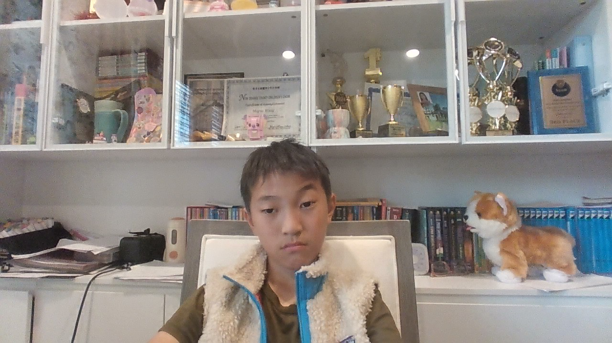

Core Interests
- Computer Science & Design
- Gaming
- Fencing
- Reading

Student • Builder • Curious Mind
I am a student interested in computer science and design. I enjoy creating projects, exploring games, and growing through both strategic thinking and creativity.
I have already built several projects, and I am always looking for new challenges that combine logic, design, and experimentation.
Whether I am practicing fencing, reading a new book, or solving a math problem, I like activities that sharpen focus and reward creativity.